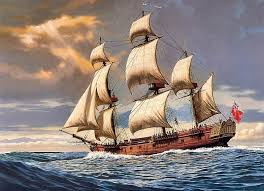

«Морской бой» — игра для двух участников, в которой игроки по очереди называют координаты на неизвестной им карте соперника. Если у соперника по этим координатам имеется корабль (координаты заняты), то корабль или его часть «топится», а попавший получает право сделать ещё один ход.
Размещаются:
При размещении корабли не могут касаться друг друга сторонами и углами. Встречаются, однако, варианты, когда касание углами не запрещается. Встречаются также варианты игры, когда корабли могут размещаться буквой «Г» («трех-» и «четырехпалубные»), квадратом или зигзагом («четырехпалубные»). Кроме того, есть варианты с другим набором кораблей (напр. один пятипалубный, два четырёхпалубных, и т.д.) и/или другой формой поля.
Рядом со «своим» полем чертится «чужое» такого же размера, только пустое. Это участок моря, где плавают чужие корабли противника.
При попадании в корабль противника — на чужом поле ставится крестик, при холостом выстреле — точка. Попавший стреляет ещё раз.
Игрок, выполняющий ход, совершает выстрел — называет вслух координаты клетки, в которой, по его мнению, находится корабль противника, например, «В1».
Победителем считается тот, кто первым потопит все 10 кораблей противника. Проигравший имеет право попросить изучить после окончания игры у соперника игровое поле. Если проигравший находит какое-нибудь нарушение правил (см. ниже), то победа присуждается ему. Первоначальный победитель в свою очередь может попросить у соперника игровое поле для поиска нарушений. Если он их находит, то игроки сверяют чужие поля друг у друга. Если никаких несоответствий не замечено, то игра не засчитывается (оба проиграли). Тот, у кого чужое поле будет неверным (причём доказуемо неверным), будет проигравшим, а его соперник победителем.